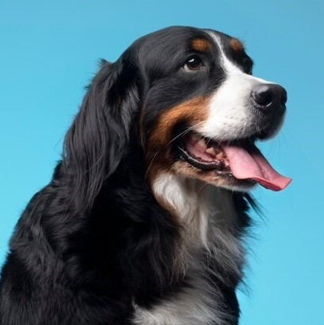

CliniPet
Cada patinha merece cuidados especiais. Na CliniPet, o amor pela saúde dos seus pets é a nossa missão!
O que torna a CliniPet única?
Na CliniPet, destacamo-nos pelo nosso compromisso com o cuidado compassivo e personalizado para cada animal. Nossa equipe altamente qualificada está aqui para garantir que cada pet receba o tratamento que merece.

Vamos além do tratamento; construímos relações duradouras, cuidando não apenas da saúde, mas também do bem-estar emocional de seus amados companheiros peludos.
Proporcione conforto e limpeza ao seu melhor amigo. Nossos serviços de lavagem são cuidadosamente projetados para manter seu pet limpo, feliz e com um visual incrível.